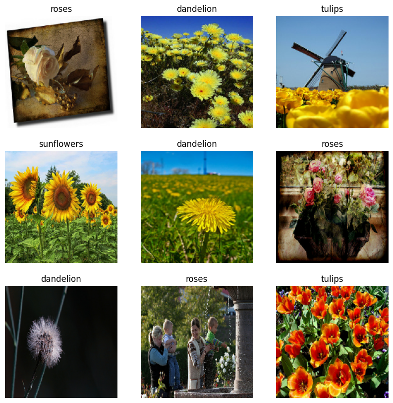
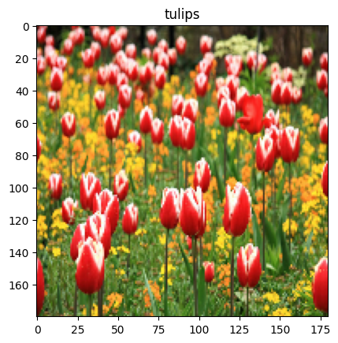
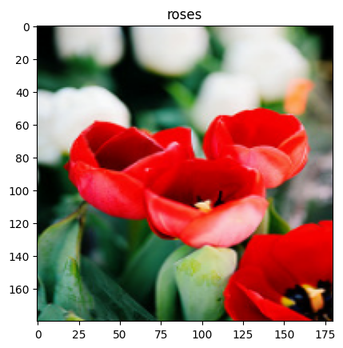
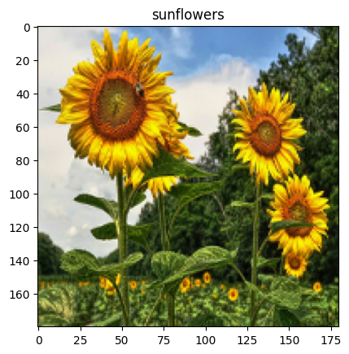
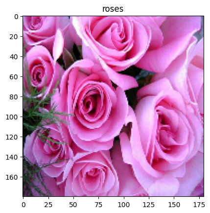
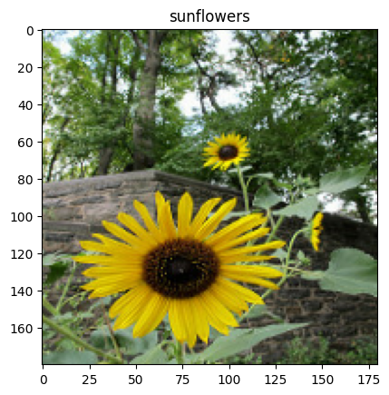

[1]:
# this cell contains code to build the flower
# source https://www.tensorflow.org/tutorials/load_data/images
import pathlib
import random
import os
import tensorflow as tf
import numpy as np
import IPython.display as display
tf.__version__
print("downloading images")
import pathlib
dataset_url = "https://storage.googleapis.com/download.tensorflow.org/example_images/flower_photos.tgz"
archive = tf.keras.utils.get_file(origin=dataset_url, extract=True)
data_dir = pathlib.Path(archive).with_suffix('')
print("images are stored in {}".format(data_dir))
image_count = len(list(data_dir.glob('*/*.jpg')))
print("there are {} images".format(image_count))
batch_size = 32
img_height = 180
img_width = 180
train_ds = tf.keras.utils.image_dataset_from_directory(
data_dir,
validation_split=0.2,
subset="training",
seed=123,
image_size=(img_height, img_width),
batch_size=batch_size)
val_ds = tf.keras.utils.image_dataset_from_directory(
data_dir,
validation_split=0.2,
subset="validation",
seed=123,
image_size=(img_height, img_width),
batch_size=batch_size)
class_names = train_ds.class_names
print(class_names)
import matplotlib.pyplot as plt
plt.figure(figsize=(10, 10))
for images, labels in train_ds.take(1):
for i in range(9):
ax = plt.subplot(3, 3, i + 1)
plt.imshow(images[i].numpy().astype("uint8"))
plt.title(class_names[labels[i]])
plt.axis("off")
normalization_layer = tf.keras.layers.Rescaling(1./255)
normalized_ds = train_ds.map(lambda x, y: (normalization_layer(x), y))
image_batch, labels_batch = next(iter(normalized_ds))
first_image = image_batch[0]
# Notice the pixel values are now in `[0,1]`.
print(np.min(first_image), np.max(first_image))
AUTOTUNE = tf.data.AUTOTUNE
train_ds = train_ds.cache().prefetch(buffer_size=AUTOTUNE)
val_ds = val_ds.cache().prefetch(buffer_size=AUTOTUNE)
num_classes = 5
model = tf.keras.Sequential([
tf.keras.layers.Rescaling(1./255),
tf.keras.layers.Conv2D(32, 3, activation='relu'),
tf.keras.layers.MaxPooling2D(),
tf.keras.layers.Conv2D(32, 3, activation='relu'),
tf.keras.layers.MaxPooling2D(),
tf.keras.layers.Conv2D(32, 3, activation='relu'),
tf.keras.layers.MaxPooling2D(),
tf.keras.layers.Flatten(),
tf.keras.layers.Dense(128, activation='relu'),
tf.keras.layers.Dense(num_classes)
])
model.compile(
optimizer='adam',
loss=tf.keras.losses.SparseCategoricalCrossentropy(from_logits=True),
metrics=['accuracy'])
model.fit(
train_ds,
validation_data=val_ds,
epochs=1
)
2023-11-02 01:29:31.703244: I tensorflow/core/util/port.cc:111] oneDNN custom operations are on. You may see slightly different numerical results due to floating-point round-off errors from different computation orders. To turn them off, set the environment variable `TF_ENABLE_ONEDNN_OPTS=0`.
2023-11-02 01:29:31.704724: I tensorflow/tsl/cuda/cudart_stub.cc:28] Could not find cuda drivers on your machine, GPU will not be used.
2023-11-02 01:29:31.726034: E tensorflow/compiler/xla/stream_executor/cuda/cuda_dnn.cc:9342] Unable to register cuDNN factory: Attempting to register factory for plugin cuDNN when one has already been registered
2023-11-02 01:29:31.726059: E tensorflow/compiler/xla/stream_executor/cuda/cuda_fft.cc:609] Unable to register cuFFT factory: Attempting to register factory for plugin cuFFT when one has already been registered
2023-11-02 01:29:31.726074: E tensorflow/compiler/xla/stream_executor/cuda/cuda_blas.cc:1518] Unable to register cuBLAS factory: Attempting to register factory for plugin cuBLAS when one has already been registered
2023-11-02 01:29:31.730396: I tensorflow/tsl/cuda/cudart_stub.cc:28] Could not find cuda drivers on your machine, GPU will not be used.
2023-11-02 01:29:31.731976: I tensorflow/core/platform/cpu_feature_guard.cc:182] This TensorFlow binary is optimized to use available CPU instructions in performance-critical operations.
To enable the following instructions: AVX2 AVX_VNNI FMA, in other operations, rebuild TensorFlow with the appropriate compiler flags.
2023-11-02 01:29:32.266904: W tensorflow/compiler/tf2tensorrt/utils/py_utils.cc:38] TF-TRT Warning: Could not find TensorRT
downloading images
images are stored in /home/patrick/.keras/datasets/flower_photos
there are 3670 images
Found 3670 files belonging to 5 classes.
Using 2936 files for training.
Found 3670 files belonging to 5 classes.
Using 734 files for validation.
['daisy', 'dandelion', 'roses', 'sunflowers', 'tulips']
0.0 1.0
92/92 [==============================] - 16s 170ms/step - loss: 1.2551 - accuracy: 0.4663 - val_loss: 1.0173 - val_accuracy: 0.5967
[1]:
<keras.src.callbacks.History at 0x7fe4e82e9420>

[2]:
os.environ['OMEGA_FRAMEWORKS'] = "scikit-learn,tensorflow,keras"
# deploy the fitted model to omega-ml
import numpy as np
import omegaml as om
om.models.put(model, 'tfkeras-flower')
/home/patrick/mambaforge/envs/omegaml-ce/lib/python3.10/site-packages/celery/fixups/django.py:56: FixupWarning: Environment variable DJANGO_SETTINGS_MODULE is defined
but Django isn't installed. Won't apply Django fix-ups!
warnings.warn(FixupWarning(ERR_NOT_INSTALLED))
/home/patrick/mambaforge/envs/omegaml-ce/lib/python3.10/site-packages/keras/src/engine/training.py:3079: UserWarning: You are saving your model as an HDF5 file via `model.save()`. This file format is considered legacy. We recommend using instead the native Keras format, e.g. `model.save('my_model.keras')`.
saving_api.save_model(
[2]:
<Metadata: Metadata(name=tfkeras-flower,bucket=omegaml,prefix=models/,kind=tfkeras.h5,created=2023-11-02 00:02:23.093000)>
[3]:
images_ds = tf.keras.utils.image_dataset_from_directory(
data_dir,
validation_split=0.2,
subset="validation",
seed=123,
image_size=(img_height, img_width),
batch_size=1)
Found 3670 files belonging to 5 classes.
Using 734 files for validation.
[4]:
# use the model for prediction (Python API)
%matplotlib inline
from matplotlib import pyplot as plt
# loading the model can take some time
model_ = om.models.get('tfkeras-flower')
for img, label in images_ds.take(3):
result = model.predict(img.numpy())
predicted = class_names[np.argmax(result)]
fig = plt.figure()
plt.imshow(img[0].numpy().astype("uint8"))
plt.title(predicted)
1/1 [==============================] - 0s 53ms/step
1/1 [==============================] - 0s 11ms/step
1/1 [==============================] - 0s 12ms/step



[5]:
# start async prediction
results = []
for img, label in images_ds.take(3):
result = om.runtime.model('tfkeras-flower').predict(np.array(img.numpy()))
results.append((img, result))
# get results and show
for img, result in results:
preds = result.get()
for i, simg in enumerate(img):
if i > 3:
break
pred = preds[i]
label = class_names[np.argmax(pred)]
fig = plt.figure()
plt.title(label)
plt.imshow(img[i].numpy().astype("uint8"))


[6]:
# REST API
%load_ext autoreload
%autoreload 2
import requests
from omegaml.client.auth import AuthenticationEnv
# -- setup authentication and API URL
auth = AuthenticationEnv.get_restapi_auth(om=om)
base_url = getattr(om.defaults, 'OMEGA_RESTAPI_URL', 'http://localhost:5000')
predict_url = '{base_url}/api/v1/model/tfkeras-flower/predict'.format(**locals())
for img, label in images_ds.take(1):
for i, simg in enumerate(img):
if i > 3:
break
# take picture
imgdata = img[i].numpy()
# predict
resp = requests.put(predict_url, json={
'columns': ['x'],
'data': {'x': [imgdata.tolist()]},
'shape': list(imgdata.shape),
}, auth=auth)
# show result
data = resp.json()
print(data)
prediction = data['result']
label = class_names[np.argmax(prediction)]
fig = plt.figure()
plt.title(label)
plt.imshow(imgdata.astype("uint8"))
{'model': 'tfkeras-flower', 'result': [-0.9053046107292175, -4.508581161499023, 6.180307388305664, -3.5794825553894043, 4.664541721343994], 'resource_uri': 'tfkeras-flower'}

[7]:
# save model as a a Tensorflow SavedModel
# -- note this may print several tensorflow warnings due to deprecated functionality
model_ = om.models.get('tfkeras-flower')
om.models.put(model_, 'tfkeras-flower-savedmodel', as_savedmodel=True)
[7]:
<Metadata: Metadata(name=tfkeras-flower-savedmodel,bucket=omegaml,prefix=models/,kind=tfkeras.savedmodel,created=2023-11-02 00:57:17.562000)>
[8]:
# use the SavedModel instance
import omegaml as om
import requests
from omegaml.client.auth import AuthenticationEnv
import omegaml as om
# -- setup authentication and API URL
auth = AuthenticationEnv.get_restapi_auth(om=om)
base_url = getattr(om.defaults, 'OMEGA_RESTAPI_URL', 'http://localhost:5000')
predict_url = '{base_url}/api/v1/model/tfkeras-flower-savedmodel/predict'.format(**locals())
print(predict_url)
for img, label in images_ds.take(1):
for i, simg in enumerate(img):
if i > 3:
break
# take picture
imgdata = img[i].numpy()
# predict
resp = requests.put(predict_url, json={
'columns': ['x'],
'data': {'x': [imgdata.tolist()]},
'shape': list(imgdata.shape),
}, auth=auth)
# show result
data = resp.json()
print(data)
prediction = data['result']
label = class_names[np.argmax(prediction)]
fig = plt.figure()
plt.title(label)
plt.imshow(imgdata.astype("uint8"))
http://localhost:5000/api/v1/model/tfkeras-flower-savedmodel/predict
{'model': 'tfkeras-flower-savedmodel', 'result': [-0.08039688318967819, 0.033009108155965805, -1.2970330715179443, 1.4101769924163818, -0.6816001534461975], 'resource_uri': 'tfkeras-flower-savedmodel'}

[9]:
# use a virtualobj to perform business logic on model input and output
from omegaml.backends.virtualobj import virtualobj
@virtualobj
def mymodel(data=None, method=None, meta=None, store=None, **kwargs):
# in a virutalobj handler, always import modules locally
import numpy as np
models = store
if method == 'predict':
label_names = ['daisy', 'dandelion', 'roses', 'sunflowers', 'tulips']
# do some pre-processing, e.g. to ensure the shape matches the model input layer
X = np.array([data])
# pass on to the model in required input shape
result = models.get('tfkeras-flower-savedmodel').predict(X)
# return labels instead of numeric result
return label_names[np.argmax(result)]
# store an image
for img, label in images_ds.take(1):
om.datasets.put(img[0].numpy(), 'image')
# store the virtualobj handler as a model
om.models.drop('mymodel', force=True)
om.models.put(mymodel, 'mymodel')
# use the model REST API using the stored image
modelname = 'mymodel'
dataset = 'image'
predict_url = '{base_url}/api/v1/model/{modelname}/predict?datax={dataset}'.format(**locals())
resp = requests.put(predict_url, auth=auth, json={})
print(resp.json())
{'model': 'mymodel', 'result': 'tulips', 'resource_uri': 'mymodel'}
[10]:
# store images. no need to use TFExample or TFRecord (however you can if you want to)
for i, (image, label) in enumerate(images_ds.take(10)):
meta = om.datasets.put(image.numpy(), f'image-{i}-{label[0]}')
print(meta)
Metadata(name=image-0-3,bucket=omegaml,prefix=data/,kind=ndarray.bin,created=2023-11-02 01:29:58.520447)
Metadata(name=image-1-2,bucket=omegaml,prefix=data/,kind=ndarray.bin,created=2023-11-02 01:29:58.525730)
Metadata(name=image-2-1,bucket=omegaml,prefix=data/,kind=ndarray.bin,created=2023-11-02 01:28:31.582000)
Metadata(name=image-3-0,bucket=omegaml,prefix=data/,kind=ndarray.bin,created=2023-11-02 01:29:58.546458)
Metadata(name=image-4-4,bucket=omegaml,prefix=data/,kind=ndarray.bin,created=2023-11-02 01:29:58.557414)
Metadata(name=image-5-1,bucket=omegaml,prefix=data/,kind=ndarray.bin,created=2023-11-02 01:29:58.569521)
Metadata(name=image-6-4,bucket=omegaml,prefix=data/,kind=ndarray.bin,created=2023-11-02 01:29:58.577566)
Metadata(name=image-7-2,bucket=omegaml,prefix=data/,kind=ndarray.bin,created=2023-11-02 01:28:31.660000)
Metadata(name=image-8-2,bucket=omegaml,prefix=data/,kind=ndarray.bin,created=2023-11-02 01:29:58.601234)
Metadata(name=image-9-2,bucket=omegaml,prefix=data/,kind=ndarray.bin,created=2023-11-02 01:29:58.616924)
[11]:
# virutalobj that returns a tf.Dataset
@virtualobj
def trainds(data=None, method=None, meta=None, store=None, **kwargs):
import tensorflow as tf
datasets = store
def get_images():
for name in datasets.list(regexp='image-[0-255]-.*'):
label = name.split('-')[-1]
img = datasets.get(name)
yield (img, label)
if method == 'get':
gen = get_images()
output_types = (tf.int64, tf.int64)
output_shapes = (tf.TensorShape([180, 180, 3]), tf.TensorShape([]))
ds = tf.data.Dataset.from_generator(get_images, output_types, output_shapes)
return ds.batch(32)
om.datasets.put(trainds, 'tfkeras-trainds', replace=True)
[11]:
<Metadata: Metadata(name=tfkeras-trainds,bucket=omegaml,prefix=data/,kind=virtualobj.dill,created=2023-11-02 01:10:48.288000)>